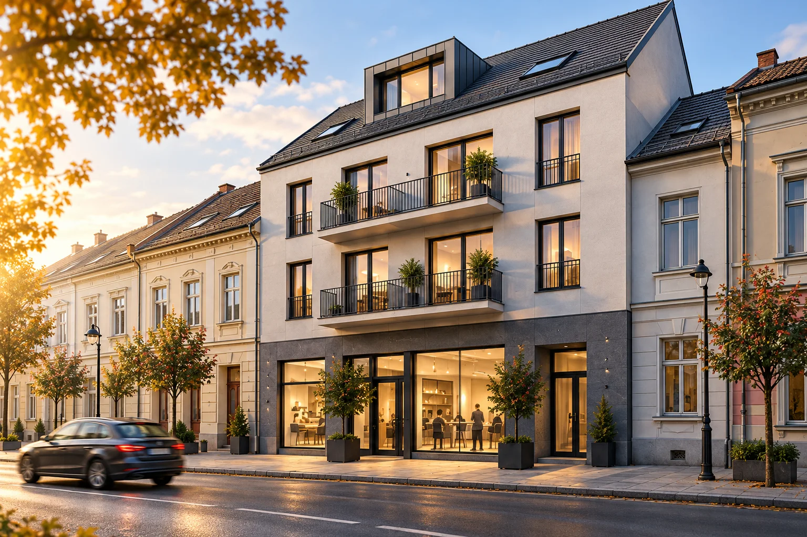

Bývanie, práca
a služby v centre Martina.
Osem jednotiek na Moskovskej ulici.
Byty, administratíva, obchod
a podkrovný apartmán.
8 jednotiek
7 parkovacích miestv predajnom pláne
Výstavba prebieha
Ponuka priestorov
Všetky označenia, dispozície, výmery a stavy jednotiek sú vymyslené.
Ceny na vyžiadanie. Nejde o skutočnú predajnú ponuku.
Zobrazených 8 z 8 jednotiek
| Jednotka | Typ | Podlažie | Interiér | Exteriér | Stav | Detail a dopyt |
|---|
Pre tento výber tu nie je jednotka.
Skúste iný typ priestoru alebo stav.
Predstava priestorov
Fiktívne interiéry pre predstavu o vizuálnom štýle.
Projekt na Moskovskej
Menší polyfunkčný dom v centre Martina.
Investorom je BALCON, s. r. o.
Štyri byty, dva administratívne priestory, jeden priestor pre obchod alebo služby a jeden podkrovný apartmán. Rozdielne možnosti pod jednou strechou.
Výstavba
Plánované ukončenie stavebných prác:
30. 10. 2027
Termín kolaudácie a odovzdania bude potvrdený. Presné podmienky parkovania doplnia predajné podklady.
V centre Martina
Moskovská ulica, Martin.
Presnú polohu domu a informácie o okolí doplníme po potvrdení projektových podkladov.
Priestor pre vaše plány.
Vyskúšajte si výber jednotky a ukážkový dopyt.
Kontaktné údaje predaja ešte neboli doplnené.